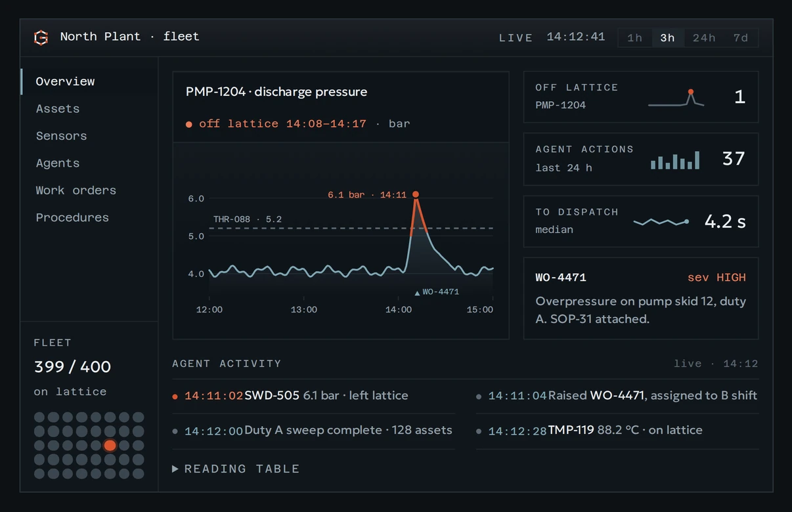
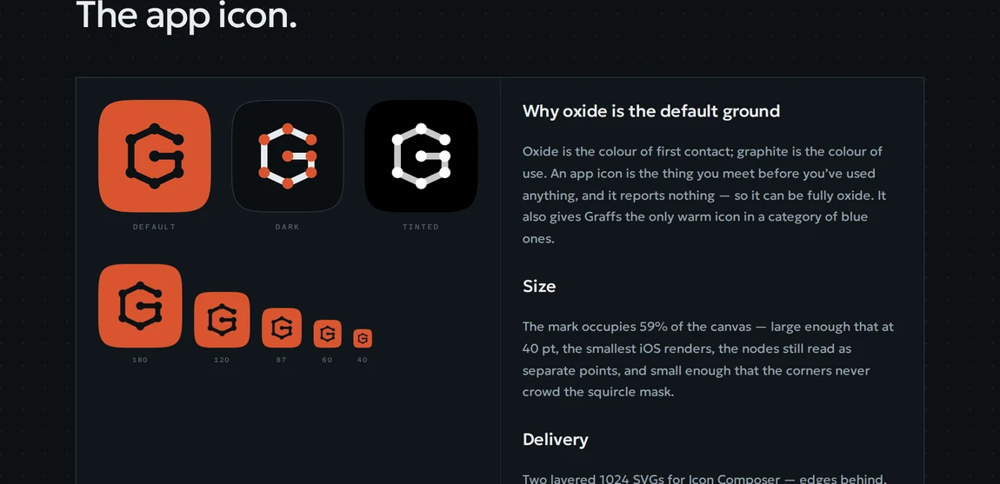
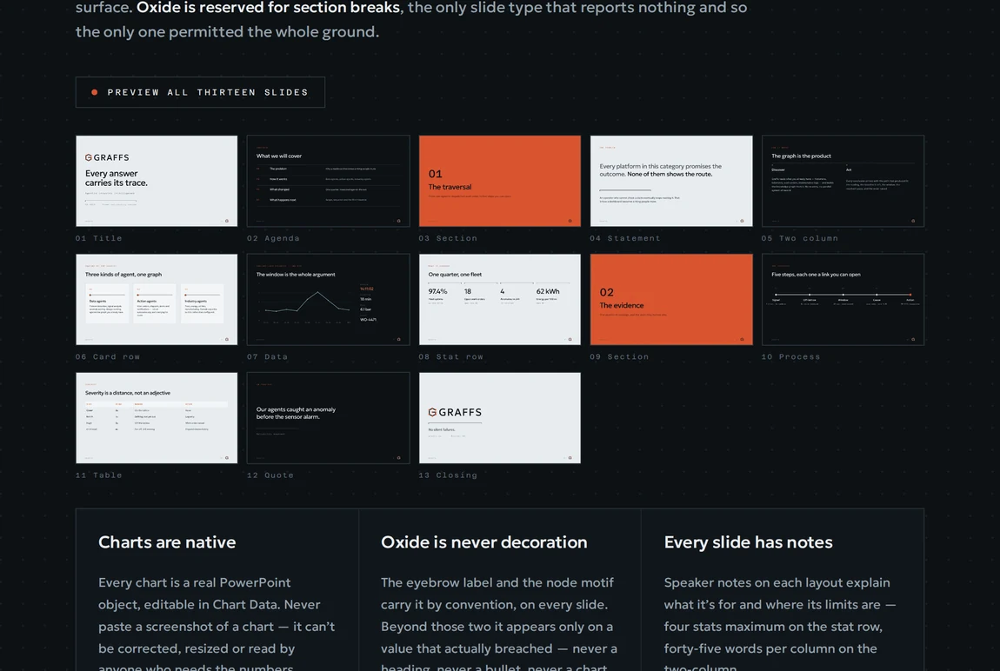

Graffs
A lattice identity for an agentic analytics platform — and the product marketing site built on it.
Context
Graffs models an industrial operation as a knowledge graph, and ships agents that traverse it — from a raw sensor reading to a dispatched work order. Finrez was brought in for the identity: a logo, a PowerPoint template, and an asset set ready for immediate use. The product marketing site followed from the same system.
Problem
Every platform in the category promises accuracy, which is a claim nobody can check. Graffs needed a line an engineer would actually believe, and a visual system restrained enough that a single deviation could break it on purpose.
Role & Approach
TODO — your role, who else was involved, and how the work was scoped.
The mark
The name is the thesis: Graffs sounds like graphs, and the product is one. So the mark isn’t drawn, it’s plotted — a G routed between eight points on a five-by-eleven lattice, with a node at every intersection and no optical adjustments anywhere. Anyone can rebuild it from the coordinate table, which is the test a plotted mark passes and a drawn one doesn’t. The aperture is three lattice units, matched by the tail run beneath it; it is the mark’s only asymmetry and the reason it reads as a G rather than a ring.
Vertices
| ID | Coord | Role |
|---|---|---|
| 01 | x5, y3 | terminal, front |
| 02 | x3, y1 | apex |
| 03 | x1, y3 | shoulder |
| 04 | x1, y9 | heel |
| 05 | x3, y11 | base |
| 06 | x5, y9 | tail |
| 07 | x5, y6 | bar, outer |
| 08 | x3, y6 | bar, inner |
Construction · GRF-M-01 — every vertex on an intersection, no optical adjustments
Alternates
Six files, each for a situation the primary mark can’t cover: reversed for paper, knockout for an oxide surface, a one-colour version where the nodes become open rings so the points survive a single plate, a reduction alternate for anything below 24 px, and a plotted version that animates the route at a constant rate. Where a situation isn’t listed, the answer is the primary mark.
01 · Primary
Paper edges, oxide nodes, graphite ground. The default everywhere.
02 · Reversed
On paper or any light ground. Print, light mode, documents.
03 · Knockout
One colour on oxide. The app icon, decals, anything where oxide is the surface.
04 · One colour
Nodes become open rings so the points survive without a second colour.
05 · Reduction
Below 24 px. Nodes dropped, stroke stepped up. The G survives; the points don’t.
06 · Plotted
The animated mark. The route travels at a constant rate, each node landing as the line reaches it.
Alternates · GRF-M-03 — live marks, each on the ground it is drawn for
Colour
Five values, and only four of them are surfaces. The fifth, anomaly oxide, isn’t a colour in the usual sense — it’s a state. Graphite holds roughly 85% of any surface, paper and soft ink the next 12%, cyan and oxide the remaining 3%. If orange is the first thing you see on a quiet screen, something is wrong.
Colour · GRF-BD-01 — four surfaces and one state
Type
Two faces, three weights, assigned by size rather than emphasis. Geologica carries language — a technical grotesque with a large x-height that holds at 11 px on a dark ground. Azeret Mono carries values, and only values: timestamps, readings, labels, never a sentence. Squared and blunt where Geologica is sharpened, so a readout can never be mistaken for prose.
Geologica — language
Cooling system anomaly
A technical grotesque drawn for data-dense interfaces: sharpened terminals, tight apertures, a large x-height that holds at 11 px on a dark ground.
Azeret Mono — values
14:11:02 breach sev HIGH
SWD-505 WO-4471 0123456789
Type · GRF-BD-02 — set live in Geologica and Azeret Mono
The line
“No silent failures.” It doesn’t claim the system is always right — it claims that when it’s wrong, you will know. A promise about a failure mode can be tested; a promise about quality can’t, which is why the second kind never survives contact with an engineer. Three words, no modifier, full stop.
The product marketing site
The site is where the identity has to carry weight, so it opens on the product rather than a promise. The hero is the console itself — a live agent-activity feed, six browsable sections, a pressure chart with one breach hatched above its threshold, and a fleet view of four hundred assets where exactly one point wears orange. Everything below it — the anomaly readouts, the motion, the mascot — is the same system running under load.

The anomaly
An anomaly is a point that has left the lattice. Every point in the identity sits on an intersection precisely so that one thing can break it, which means the brand needs no separate warning language. Four readouts cover every case — the off-lattice point, the window that moved, divergence against baseline, and the break where a sensor stopped reporting — each drawn the same way every time.
Off-lattice point
One reading outside tolerance. The offset is stated in the unit the instrument reports, never as “high”.
The window
The interval that moved, dimensioned across the top. Duration is the reading; lateness is what the agent acts on.
Divergence
Observed against baseline, with the gap hatched rather than filled — a shortfall is a difference, not a quantity of its own.
The break
An absence, not a reading. Oxide marks the gap and never the surviving trace — a sensor that stopped talking is the failure you were promised you would hear about.
The four anomaly readouts, drawn to the same rules every time
Motion
Motion is a readout, not a performance. Colour steps at zero milliseconds, because a state is discrete and ink doesn’t fade into oxide. Length travels in 180 ms, because a node and an edge are the same primitive at two lengths. The only weight in the system is a bounce, and it appears in exactly one state: the agent already on its way somewhere.
| Property | Duration | Curve | Why |
|---|---|---|---|
| Colour | 0 ms | stepped | A state is discrete. Ink doesn’t fade into oxide; it’s one or the other. |
| Length | 180 ms | ease-out | A node and an edge are one primitive at two lengths — the found bar is the node’s own rect, at the node’s radius, grown to 40. Growing it is the only morph. |
| Sweep | 1.6 s | ease-in-out | The scan. Fast enough to read as searching, slow enough to follow. |
| Idle scan | 3.2 s | ease-in-out | The eye at rest. Alert, never darting. |
| Bounce | 1.15 s | ease-out / ease-in | Up decelerating, down accelerating. The only weight in the system, and only in transit. |
Motion · GRF-BD-07 — the timings the mascot below actually runs on
The mascot
Software that acts on its own is easier to trust with a presence, but a mascot is also the fastest way to undo a restrained identity. So it’s the smallest thing that could work: a single lattice node with a pupil knocked out of it, given five states — at rest, scanning, found, dispatched, cleared. It adds no new shape and no new colour, only a use, and it never appears on a surface that reports. The five states ship as CSS animations that the style guide and the site both render from.
At rest
Scanning
Found
Dispatched
Cleared
Aye · GRF-BD-06 — the five states, animating on the timings above
App icon
Oxide is the colour of first contact; graphite is the colour of use. An app icon is the thing you meet before you have used anything, and it reports nothing — so it can be fully oxide, which also gives Graffs the only warm icon in a category of blue ones. The mark occupies 59% of the canvas: large enough that the nodes still read as separate points at 40 pt, small enough that the corners never crowd the squircle.

The deck
Thirteen PowerPoint layouts on the same system. Paper and graphite alternate so no two consecutive slides share a ground, which is what stops a deck flattening into one long surface. Oxide is reserved for section breaks — the only slide type that reports nothing. Every chart is a real chart object, and every layout carries speaker notes explaining what it is for and where its limits are.

Constraints
One rule governs everything: orange means a point is off its lattice, right now. Nothing else in the product may borrow it — not a heading, not a call to action, not a chart series that did nothing unusual. Put it on a button and you teach an operator to ignore the one colour that matters. TODO — the client-side constraints: stakeholders, approvals, and what the identity had to replace.
Summary
Three deliverables came out of one decision about what Graffs is, which is why the mark, the deck and the site hold together. The parts that usually get described in a brand book — motion, the mascot, the anomaly language — ship here as files instead.
Next Steps
TODO — what shipped, where it stands with the client, and what is still open.